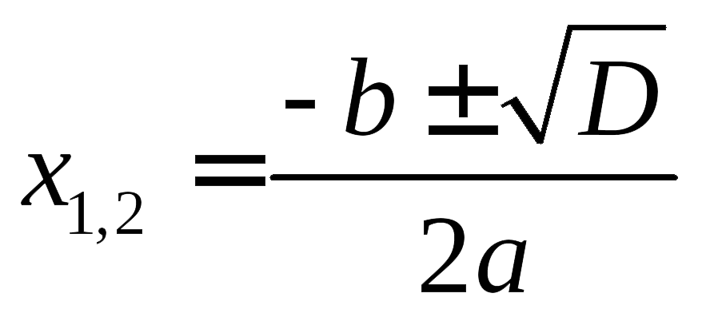

Прежде, чем изучать конкретные методы решения, заметим, что все квадратные уравнения можно условно разделить на три класса:
- Не имеют корней
- Имеют ровно один корень
- Имеют два различных корня
В этом состоит важное отличие квадратных уравнений от линейных, где корень всегда существует и единственен. Как определить, сколько корней имеет уравнение? Для этого существует замечательная вещь — дискриминант.
Дискриминант
Эту формулу надо знать наизусть. Откуда она берется — сейчас неважно. Важно другое: по знаку дискриминанта можно определить, сколько корней имеет квадратное уравнение. А именно:
- Если D < 0, корней нет;
- Если D = 0, есть ровно один корень;
- Если D > 0, корней будет два.
Обратите внимание: дискриминант указывает на количество корней, а вовсе не на их знаки, как почему-то многие считают. Взгляните на примеры — и сами все поймете:
Корни квадратного уравнения
Теперь перейдем, собственно, к решению. Если дискриминант D > 0, корни можно найти по формулам:
Когда D = 0, можно использовать любую из этих формул — получится одно и то же число, которое и будет ответом. Наконец, если D < 0, корней нет — ничего считать не надо.